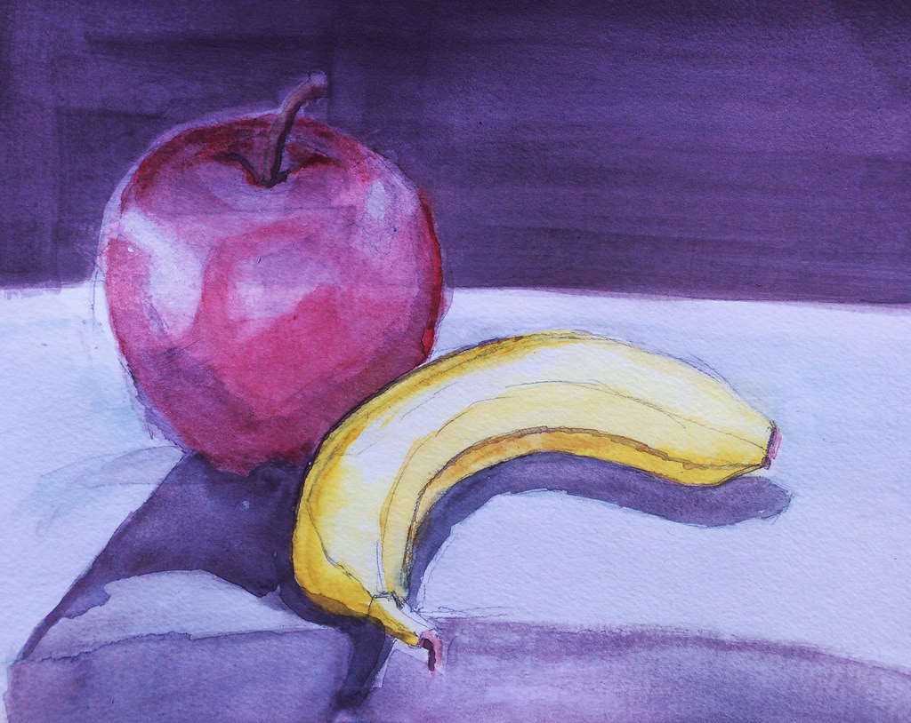
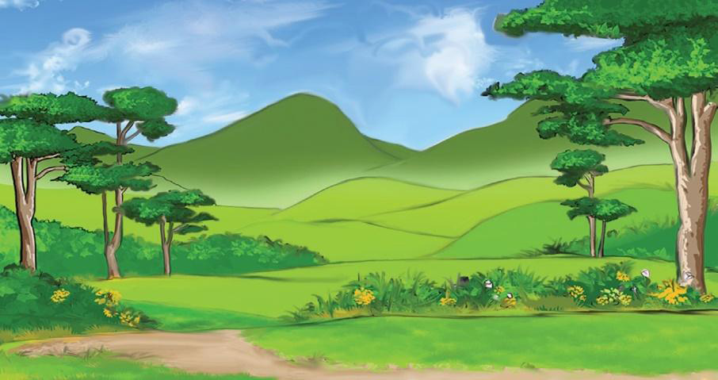

Source: https://www.flickr.com/photos/howardtj/24679475484. Retrieved on 27th October 2023
Landscape painting: This is a form of art that involves observation of the natural environment and translates it into painted images. Landscape art can be landscape and seascape sceneries that involve the depiction of animals, birds and plants of different kinds. Figure 3.12 shows a landscape painting.

Man-made forms painting: It involves painting man-made structures and products of design such as buildings, vehicles, furniture, tools and clothes. Figure 3.13 shows a man-made form of painting.